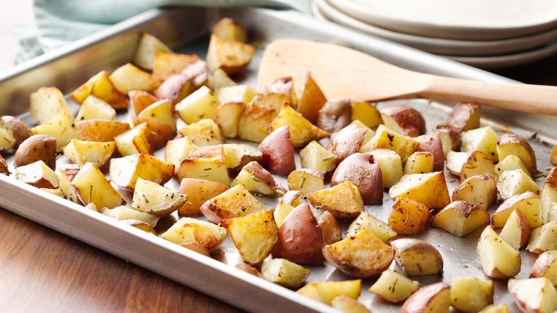

Chopped Red Potatoes

These easy and quick to prepare chopped red potatoes make for the perfect side dish!
Time: ~50 mins
Ingredients
- 2 lbs Red Potatoes
- 3 tbsp. Olive Oil
- 1-2 tbsp. Melted Butter
- 2 tbsp. Minced Garlic
- 2 tbsp. Minced Parsley
- 1 teasp. Black Pepper
- 1 teasp. Creol Seasoning
Steps
- Preheat Oven to 425 Degrees F
- Clean Potatoes in bowl with water and salt
- Cut Potatoes in quarters and boil for 6-7 mins.
- Drain water and let simmer for ~1 min
- In small pan on Med-low heat add:
- Olive Oil
- Butter
- Garlic
- Creol Seasoning
- Stir 30 sec-1 min. Let sit ~3 mins.
- Add mix to potatoes 1 tbsp. at a time, slowly covering all of them
- Line baking sheet and bake 45-50 mins. (flipping every 15 mins)
Back to Home